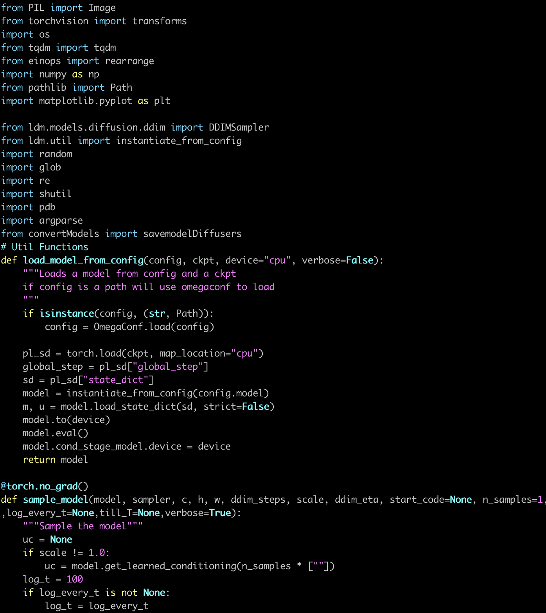
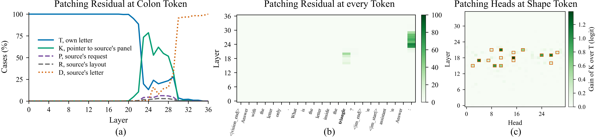

ArXiv
Preprint
Source Code
Github
How does a VLM decide what to describe next?
When you ask a vision-language model what is in a picture, it names things one at a time, and it rarely names the same thing twice. But an image has no reading order. Nothing in a photo says which object comes first. So somewhere inside the model, something has to pick the next region to describe, and remember which regions it has already described.
In this paper, we find that the model decides where to look before it looks. A few groups of attention heads build pointers into the image, carry them to the token being written, read the region they point to, and keep track of how far the list has come. We trace each step with causal patching in Qwen3-VL, and show that the same plan runs on photographs, in other languages, and at every model size from 2B to 32B.
How does a model turn an image into a list?
A vision-language model (VLM) takes an image and a question and writes an answer in words. Ask one "What animals are in this photo?" and it names them one after another: a dog, a cat, a horse. It almost never names the same animal twice, and it rarely forgets one.
That is less obvious than it sounds. An image has no reading order. Nothing in a photograph says the dog comes before the cat. Yet the answer comes out as a sequence of words, one at a time. So somewhere inside the model, something has to decide which part of the image to describe next, and remember which parts it has already described.
To see where that could happen, it helps to know how the model sees its input. The image is cut into a grid of small square patches, and each patch becomes one image token. The question is cut into word pieces, and each piece becomes a text token. The model passes all of these tokens through a stack of layers. In each layer, attention heads let every token look at the tokens before it and pull information from them. The model writes its answer one token at a time, and each new token goes through the same stack.
This last point creates a puzzle. The model has no notepad where it can write "I have named the dog" and update it after each answer. Each new token has to work out, from scratch, what has already been said. We wanted to know how it does that.
How does a VLM decide which part of an image to describe next, and how does it keep track of what it has already described?
Why a strip of panels?
Open-ended descriptions are hard to study. You can't control which objects the model will mention, or in what order. So we built a simple task where we control everything. Each image is a strip of panels. Each panel holds one shape with a letter written inside it. We ask the model for the letter inside a named shape.
We ask for a shape, not a panel number. To answer, the model has to find the shape in the image first, and only then read the letter. The same task has a list version. When the asked shape appears in several panels, we ask for the letter inside each heart, and the model lists them from left to right. This is the version where it has to keep track of what it has already written.
How do we see what a hidden state means?
We use activation patching. We run the model on two inputs, a source and a target. We save one internal state from the source run and copy it into the target run, at the same layer and the same token. Everything else in the target run stays the same. Then we read off the answer the target gives.
The trick is in how we build each pair. The source asks for the heart; the target asks for the star, in a different image. We arrange them so that every kind of information the copied state could carry leads the target to a different letter. The target's answer then tells us exactly what was in the state we copied.
Binding: where does the model decide which panel to read?
We start broad. We copy the whole hidden state at the : after "Answer", the token where the model is about to write its answer, one layer at a time. In the early layers the target ignores the patch. In the middle layers, 23 to 29, it answers K: the state there holds a pointer to a panel, and the target follows it in its own image. In the last layers it simply copies D. So by the middle of the network, the model has already decided where the answer is, but has not yet read what it is.
Where does that pointer come from? When we repeat the patch at every token of the question, one other token lights up: the shape word itself, star. Concretely, we then copy the output of one attention head at a time at the shape word, for every head in the model, and rank them by how often the target moves to K. A small set of 16 heads, in layers 15 to 21, does the job. Copying just these heads moves the pointer in most pairs, while the same number of random heads from the same layers does almost nothing. We call them binding heads, because they bind a word in the question to a place in the image.
We can split their work further. A head looks for something with its query and finds it through the keys of the tokens it attends to. If we copy only the queries, the target looks for the source's shape in its own image and answers P. If we let the heads read only the source's image keys, the target looks for its own star in the source's layout and answers R. The query says "I need a star", and the image keys say "I am the panel with the star." Copy both together, and the pointer itself moves.

Relay: how does the pointer reach the answer?
The pointer is made at the shape word, but the answer is written several tokens later, at :. Attention is the only part of the model that moves information from one token to another, so some heads at : must fetch it.
Concretely, we let each head at : read the source's information while still looking at the same tokens it normally looks at, and rank the heads by how often the target moves to K. Sixteen heads stand out. When we let them read one token at a time, they bring the pointer mostly from the shape word, exactly where the binding heads wrote it. We call them relay heads.
Two tests tie the relay heads to the binding heads. If we block the relay heads from looking at the question, the model almost always loses its answer. And if we patch the binding heads in a separate run, then let only the relay heads in a clean target read from that run, the target follows the moved pointer as often as if we had patched the binding heads directly. Nothing else from the patched run gets through. So the relay heads alone carry the pointer from the question to the answer.
Gaze: how does the model read the panel it pointed to?
At : the model holds a pointer, but the letter is still in the image. Some heads must take that pointer and look back at the right panel. We copy the queries of one head at a time at :, and find 32 heads, all after layer 19, that move the target to K when their queries are moved. We call them gaze heads.
They behave just like a pointer being followed. Their queries carry the pointer, the image keys match it by place, and the image values bring back what is drawn there. If we let them read the source's image values instead, the target writes the source's letter. And if we patch the binding heads but hold the gaze heads' queries fixed, the moved pointer has no effect at all: it only works through them. Most of these heads also appear among the Gaze Heads we found in earlier work, by watching where a model looks while it narrates comics.
Do gaze heads bring back a word, or an idea?
To find out, we drop the letters and ask about colored shapes instead: "What shape is the green marker?", in English, German, French, or Chinese. The model answers in the language of the question.
The gaze heads don't care about that language. What they bring back looks almost the same for one image asked in two languages, and very different for two images asked in one language. If we copy the gaze heads from a source that asks in French about another image, the target names the source's shape, but in its own language. So the gaze heads return a concept, not a word.
The language comes from somewhere else. A separate set of 16 language heads, late in the model, carries the language of the question. Copy them, and the answer switches language while the shape stays the same. The last MLP layers then combine the two into the final word.

How does the model know where it is in a list?
Everything so far is about a single answer. Now ask for the letter in each heart. After writing E, the model must remember that the first heart is done and move on. Since the model has no running notepad, this progress has to be rebuilt at every token, from the letters it has already written.
The only tokens that know what has been written are the answer letters and the commas after them. We copy the comma's state from a source that has written one letter into a target that has written none, and find that at layers 20 to 21 the target skips a panel it never answered from. The comma holds progress.
But what form does that progress take? It could be a count ("two done"), a set ("panels 2 and 4 done"), or a position ("done up to panel 4"). We built pairs where each of these predicts a different letter. The answer is clear: progress is a position. The comma says "done up to here", and the model moves to the next matching panel after that place.
And who marks the place? The same binding heads. At each written letter, they bind that letter back to the panel it came from. If we move a written letter one panel to the right in the source image, keeping everything else the same, the target's next answer jumps one panel to the right too. The binding heads do the same job twice: once to tie the question to the image, and again to tie each answer to where it came from.

Finally, the model has to pick the next panel. We can watch that choice without any patch, by writing the letters out of order for it. With only the second heart written, it goes on to the third. With only the last one written, it goes back to the earliest one it skipped. The rule is simple: take the nearest unwritten panel after the place where the list stopped, and go back only when nothing is left to the right. When nothing is left at all, the same step decides to stop.
Does this hold outside the strips?
Strips of panels are a clean lab, but a real VLM describes photographs. On COCO photos with ordinary questions like "What animals are in this image?", the gaze heads look ahead at the object the model is about to name, and if we block the comma from seeing an object already named, the model names it again. Setting the language heads to their English values turns non-English answers into English. The binding, relay, and gaze heads also show up in every Qwen3-VL size we tested, from 2B to 32B parameters.
Limitations
Most of our causal tests use the synthetic strips, where we control every panel. On photographs we can show that the same heads matter, but we can't build pairs as clean as on the strips. The choice of the next panel is also spread over several layers. We can locate it and edit it through the comma, but unlike binding, relay, gaze, and language, we found no small set of heads that makes it. On the largest model, the binding work is spread over more heads than on the 8B. And the language heads hold up on the mid-sized models but not on every size.
For the full set of experiments, controls, and numbers, see our paper.
How does this connect to earlier work?
Language models keep track of which entity goes with which attribute through binding. Feng and Steinhardt (ICLR 2024) showed that a language model tags each entity in a prompt with an abstract code and later follows that code to retrieve it, and Prakash et al. (ICLR 2026) showed how models use such lookbacks to track beliefs in a story.
Language models also handle lists by content. Filter heads (Sen Sharma et al., ICLR 2026) attend to the items of a list that match a rule carried in their queries. Our binding heads do something similar over image panels.
In vision-language models, Assouel et al. (ICLR 2026) found that the words of a prompt build spatial indexes to the matching image regions. Our own earlier work on Gaze Heads found a small set of heads that attend to the region being described, so that redirecting them redirects the description.
These works explain how a model finds one region that answers a question. This project shows how the same parts work together when the answer is a list, and adds what was missing: how the model tracks its progress through the image and picks the next region.
How to cite
The paper can be cited as follows.
bibliography
Rohit Gandikota, Arnab Sen Sharma, Adam Belfki, David Bau. "How VLMs Plan What's Next." arXiv preprint, 2026.
bibtex
@article{gandikota2026plan,
title={How VLMs Plan What's Next},
author={Gandikota, Rohit and Sen Sharma, Arnab and Belfki, Adam and Bau, David},
journal={arXiv preprint},
year={2026}
}